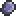
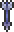
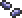
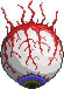

Eye of Cthulhu
| Drops | |
|---|---|
| Coins: | 3 |
| Item | Rate |
|  Demonite Ore 30-87 | 100% |
|  Unholy Arrows 20-49 | 100% |
|  Corrupt Seeds 1-3 | 100% |
| Lesser Healing Potions 5-15 | 100% |
| Eye of Cthulhu Second Form | |
|---|---|
| | |
| Statistics | |
| Type | Boss |
| AI Type | Eye of Cthulhu AI |
| Damage | 23 |
| Max Life | 1400/2800 |
| Defense | 0 |
| Eye of Cthulhu First Form | |
|---|---|
|  | |
| Statistics | |
| Type | Boss |
| AI Type | Eye of Cthulhu AI |
| Damage | 15 |
| Max Life | 2800/2800 |
| Defense | 12 |
- For strategies on how to defeat the Eye of Cthulhu, see Guide:Eye of Cthulhu strategies.
The Eye of Cthulhu is a Boss monster that the player can fight. It has been described as the easiest boss by the game's developers. It can be summoned by using a Suspicious Looking Eye which is crafted at a Demon Altar. In order to summon the boss, it must be night; otherwise, nothing will happen.
It is also possible for it to spawn naturally. This happens when the player has at least ten hearts (200 life), more than 10 defense, has at least 3 NPCs, and hasn't defeated the Eye of Cthulhu before. As long as these conditions are fulfilled, there will be a 1 in 3 chance each night of receiving the message, "You feel an evil presence watching you." Soon afterward, the Eye of Cthulhu will appear.
Behavior
The Eye of Cthulhu looks like an enormous Demon Eye, but it behaves much differently. During the first stage of the fight, it alternates between hovering overhead and trying to ram the player. When hovering, the Eye will spawn Servants of Cthulhu. If the player remains still at this time, the Eye will position itself directly overhead. When ramming, it will charge at the player 3 times, often going through walls and diving underground.
After the Eye loses 1400 health, it will transform into its second stage. In this form, the Eye of Cthulhu is faster and deals more damage, but has lower defense and no longer spawns Servants of Cthulhu. It will charge at the player 3 times, then pause for a moment and hover overhead before repeating.
It is worth noting that the Eye of Cthulhu, while it drops Demonite Ore, will not drop Shadow Scales. Some Demonite items (such as Shadow armor and the Nightmare Pickaxe) cannot be crafted without Shadow Scales, which are dropped by the Eater of Worlds.
Notes
- If you log out after the message "You feel an evil presence watching you" the Eye will not appear.
- If you use the Suspicious Looking Eye after the message "You feel an evil presence watching you", it will summon one Eye of Cthulhu, and then later another will appear allowing the player to fight two Eyes of Cthulhu at once.
- If you are already fighting an Eye and use the Suspicious Looking Eye, you will instantly be killed, and the Eye will fly away.
- It is possible to run away from the Eye, making it despawn.
- If you die while fighting an Eye or it turns day, the Eye will fly away.
- In multiplayer, multiple players can die and the Eye stays, as long as there is always at least one player alive.
- The Eye of Cthulhu can be hit by a Fallen Star, which will deal 1000 damage reduced by its defense.
- The merchant npc seems to be knowledgable on the eye, as referenced in his quotes.
History
- Pre-Release: Introduced.
| Bosses |
|---|
| King Slime Eye of Cthulhu Eater of Worlds Skeletron Wall of Flesh The Twins The Destroyer Skeletron Prime |